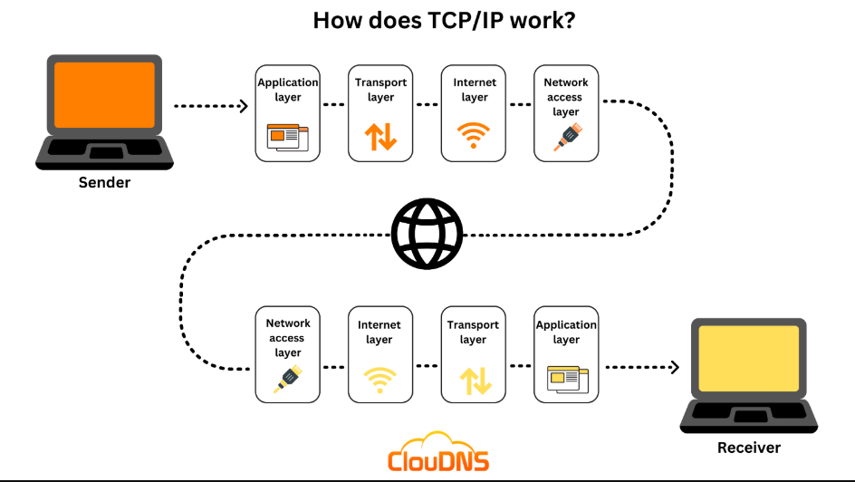

Transmission Control Protocol (TCP) is a fundamental protocol within the Internet protocol suite, playing a crucial role in ensuring reliable and ordered data transmission between devices over a network. TCP operates at the transport layer of the OSI model and is connection-oriented, meaning it establishes a connection before data transfer begins.